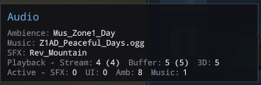

Environments
Tints
Gameplay
NPC Spawning

Mus_Zone1_CaveAmbienceFX |
|
| Conditions | |
| Environment Ids | 0 List Entries |
| Environment Tag Pattern | |
| Op | And |
| Patterns | |
| 0 | |
| Op | Equals |
| Tag | |
| 1 | |
| Op | Equals |
| Tag | |
| ... |
Custom_EnvironmentEnvironment |
|
| Tags | 1 Map Entries |
|
|
1 List Entries |
| 0 | |
| ... |
Rev_Zone_Ice_Cave |
|
| Conditions | |
| Shelter | 1 List Entries |
| Surface Physical Materials | 1 List Entries |
| 0 | |
| Physical Material Id | Ice |
| ... |